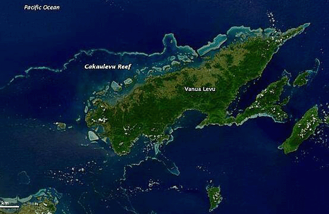
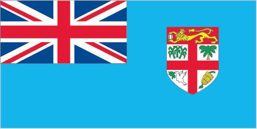
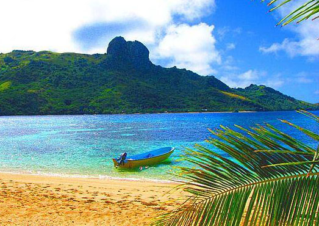

Location
Fiji is located in Oceania, in an island group in the South Pacific Ocean, about two-thirds of the way from Hawaii to New Zealand.

The Austronesians were the first settlers in Fiji in around 1000 B.C. They were followed by waves of Melanesians starting in around the first century A.D.
Abel Tasman was the first European to spot Fiji in , and he was followed by other European explorers. After much conflict and short-standing power arrangements, Fiji was ceded to the UK in .
The first British governor set Fiji up in a plantation-style economy. Finally, in , Fiji achieved independence, but there was much turmoil and a series of coups that ended with Josaia Bainimarama's coup, after which he placed himself as prime minister and continues to hold the position.
Currently, Fiji is a hub in the pacific. It is a center for Pacific tourism and proclaimed by many to be a dream vacation spot.
Fiji is located in Oceania, in an island group in the South Pacific Ocean, about two-thirds of the way from Hawaii to New Zealand.

The climate in Fiji is described as tropical marine with only slight temperature variation.
| Land Use | Percentage of land |
|---|---|
| agricultural land | 23.3% |
| arable land | 9% |
| permanent crops | 4.7% |
| permanent pasture | 9.6% |
| forest | 55.7% |
| other | 21% |
As of , Fiji's population was 943,747. Citizens of Fiji are described as "Fijians" (noun), or things from the country are described as "Fijian" (adjective).
Fiji is home to numerous different ethnic groups. Take a look below to see what the population is made up of!
| Ethnic Group | Percentage |
|---|---|
| iTaukei | 56.8% |
| Indo-Fijian | 37.5% |
| Rotuman | 1.2% |
| other | 4.5% |
Important Note: A law replaces "Fijian" with "iTaukei" when referring to the original native settlers of Fiji.
There are three official languages of Fiji: English, iTaukei, and Fiji Hindi.
Fiji has a parliamentary republic in place. Suffrage is universal and granted to each citizen once they reach 18 years of age. In Fiji, citizenship is granted by descent only, so at least one parent mut be a citizen of Fiji in order for the child to have citizenship at birth.
The national symbol of Fiji is the Fijian canoe. The national color is light blue. This light blue color is featured on their country's flag, and symbolizes the Pacific Ocean.

Fiji's national anthem is "God Bless Fiji," or "Meda Dau Doka." However, the Fijian title directly translates to "Let Us Show Pride" in English. It is a short anthem written by Michael Francis Alexander Prescott.

If you are looking to visit the beautiful island of Fiji, be sure to check out Fiji's travel website here! Click here to navigate back to the top of the page.